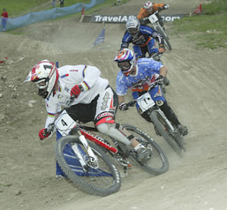
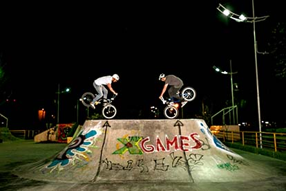

Bicicletas e seus modelos
Um pouco sobre as bicicletas
A bicicleta é um veículo de duas rodas presas a um quadro, movido pelo esforço do próprio usuário através de pedais, sendo assim um velocípede de duas rodas. Como durante a sua locomoção não são emitidos gases poluentes nem com efeito de estufa, a bicicleta é considerada assim um veículo zero emissões.
https://pt.wikipedia.org/wiki/Bicicleta

Existem quantos estilos diferentes de bicicletas ?
Existem 6 diferentes tipos de bicicletas para diferentes estilos de vida. Vai de modelos para pessoas casuais até as mais radicais, de pessoas que querem fazer exercício e pessoas que só precisam se locomover.
Clique Abaixo Para Ver.
